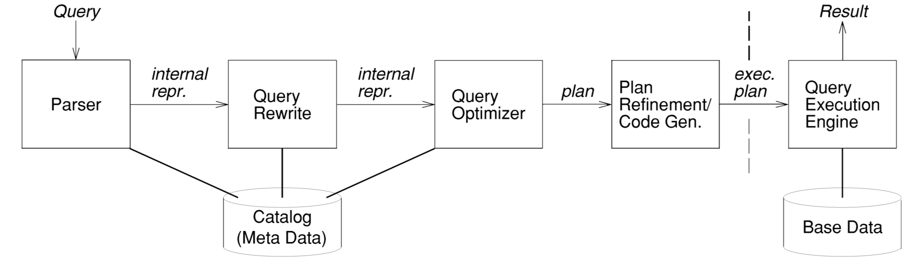

分布式查询处理的最新进展
DONALD KOSSMANN
University of Passau
2000年发表
分布式数据处理正在成为现实。企业希望这样做有很多原因，他们通常必须这样做才能保持竞争力。虽然分布式数据处理的大部分基础设施已经存在（例如，现代网络技术），但许多问题使得分布式数据处理仍然是一项复杂的工作：（1）分布式系统可能变得非常庞大，涉及包括PC在内的数千个异构站点 和大型机服务器机器; （2）分布式系统的状态变化很快，因为站点的负载随时间变化，新的站点被添加到系统中; （3）遗留系统需要集成 —— 这种遗留系统通常不是为分布式数据处理而设计的，现在需要与分布式环境中的其他（现代）系统进行交互。
本文介绍了分布式数据库查询处理的最新技术和信息系统。本文介绍了分布式查询处理和一系列对分布式有用的技术，并和课本一样的结构进行组织。这些技术包括特殊的连接技术，利用内部查询并行性，降低通信成本的技术，以及利用缓存和数据复制的技术。此外，本文还讨论了不同类型的分布式系统，如客户端服务器，中间件（多层）和异构数据库系统，并给出了查询处理在这些系统中的工作方式。
1. 介绍
1.1 背景和动机
自从70年代以来，研究人员和参与人员就对分布式数据库系统很感兴趣。在那个时候，主要关注的是支持大型企业和组织的 分布式数据管理，这些企业和组织将数据保存在不同的办公室或子公司。尽管有很多清晰的需求和许多好的想法以及原型（例如，System R*， SSD-1，和分布式 Ingres），早期对于构建分布式数据库的努力未被成功商业。在一些方面，早期的分布式数据库系统领先于其时代。首先，通信技术对于传送 MB 字节的数据并不足够稳定。其次，大型企业通过发送磁带，磁盘或只是纸张在办公室之间交换数据，在没有复杂的分布式数据库技术的情况下设法生存。
特别地，业务开始依赖分布式而不是中心化的数据库，原因如下：
- 成本和可伸缩性
- 集成不同的软件模块
- 集成历史遗留系统
- 新的应用
- 市场压力
假设用户和应用使用声明式查询语言如 SQL，并且不需要知道数据在分布式系统存储的格式。目标是尽可能高效执行这些查询，以便最小化用户的等待时间和应用程序的延迟。为此，我们将讨论一系列技术，这些技术对于在当今的分布式系统中的执行查询特别有效。例如，我们将描述查询优化器的设计，该查询优化器编译查询以执行，并确定执行查询的许多替代方法中的最佳可能方式。 我们还将展示如何使用缓存和复制等技术来提高分布式环境中查询的性能。 此外，我们将介绍客户端 —— 服务器，中间件（多媒体）以及异构数据库和信息系统的特定查询处理技术，这些技术代表了实践中经常出现的体系结构。
1.2 论文的范围和相关研究
在数据库系统领域中已经做了大量工作。所有这些工作大致可分为 架构 和 事务处理 技术（即快速处理小型更新操作），处理查询处理（即主要是读取大量数据的读操作），以及用于高级应用程序的 数据模型，语言和用户界面。在这篇文章中，主要关注查询处理。
并行数据库 是一个特殊的分布式系统类型。分布式和并行有一些类似的属性和目标，特别是并行系统如果有“无共享”架构。并行数据库系统的目的是改善交易和查询响应时间，以及集中式应用程序的系统可用性。因此，并行系统强调上述成本/可伸缩性参数，而本文中讨论的分布式系统通常会解决诸如组件异构性等问题。 虽然一些查询处理技术对两种系统都有用，但这两个领域的研究人员都针对其特定环境开发了专用技术。 在本文中，我们将集中讨论分布式数据库系统感兴趣的技术，并且不讨论在并行数据库系统中专门使用的技术（例如，特殊的并行连接方法，在查询执行期间对数据进行重新分区等）。 DeWitt和Gray [1992]给出了并行数据库系统的一个很好的概述。
1.3 论文组织
- 第二节. 给出了查询处理架构和基本的查询执行技术。
- 第三节. 深入研究一个特定且非常重要的分布式数据库系统的查询处理：客户端 —— 服务器数据库系统。
- 第四节. 处理异构数据库系统中出现的查询处理问题，即由具有不同模式，不同查询处理能力和应用程序编程接口的多个自治组件数据库组成的系统。
- 第五节. 显示数据放置（即复制和缓存）和查询处理如何交互，并显示数据如何动态和自动地在系统中分布，以实现良好的性能。
- 第六节. 描述了分布式数据处理的其他新兴和有前途的架构; 具体而言，本部分概述了分布式查询处理和基于传播的信息系统的经济模型。
- 第七节. 包含结论和总结未来研究的未解决问题。
2. 分布式查询处理：基本方法和技术
2.1 查询处理的架构
查询处理架构，可以用于描述中心、分布式或者并行系统。

- 解析器：将查询转换为内部的表示，可以被后续阶段很容易地处理，例如flex、bison可以用来构造解析器。相同的解析器可以用于单机和分布式。
- 查询重写：转换一个查询以便执行良好的优化，而不关注系统的物理状态（表大小，索引、表副本的位置、机器的快慢等）。典型的转换是消除冗余谓词，简化表达式以及消除子查询和视图。在分布式系统中，查询重写还会选择表的分片。查询重写由复杂的复杂的规则引擎执行。（逻辑计划）
- 查询优化：依赖系统的物理状态。优化器决定使用哪个索引，那种方法（例如，哈希或者排序）执行查询操作（连接和分组），以及哪种顺序执行查询。查询优化器决定每个操作的查询执行分配多少内存。在分布式系统中，优化器必须决定每个操作在哪个站点上执行。为了完成这些决定，优化器列举了所有的可替换计划（如下所描述）使用代价估算模型选择最佳计划。几乎所有的优化器都基于动态规划，以便有效地实现枚举计划。（物理计划）
- 计划：计划精确指定了查询的执行方式。可能每个数据系统都以相同的方式表示计划：树。计划的节点是算子，并且每个算子执行特定的操作（例如连接、分组、排序、扫描等）。计划的节点带有注释信息例如要执行算子的位置。计划的边表示算子的生产者消费者关系。
- 计划细化/代码生成：此组件将优化程序生成的计划转换为可执行计划。 例如，在System R中，这种转换涉及生成类似汇编程序的代码，以有效地评估表达式和谓词[Lorie and Wade 1979]。 在某些系统中，计划细化还涉及执行简单优化，这些优化不是由查询优化器执行的，以简化查询优化器的实现。
- 查询执行引擎：所有流行的查询执行引擎都基于迭代模型。在这个模型中，算子被实现为迭代器，所有的迭代器有相同的接口。这样两个迭代器可以是互相可插拔的（由一个计划的消费者——生产者关系指定）。迭代器模型的另一个优点是它支持从一个算子到另一个算子的结果 流水线操作，流水线操作一般性能都很好。
- 系统表：存储了解析，重写和优化查询所需的所有信息。它维护数据库的模式（即表，视图，用户定义的类型和函数的定义，完整性约束等），分片模式（即有关全局表已被分片的信息以及如何重建它们），以及物理信息，例如表格分片副本的位置，索引信息以及用于估算计划成本的统计数据。在大多数关系数据库系统中，系统表信息与表中的所有其他数据一样存储。在分布式数据库系统中，出现了存储系统表s的位置的问题。最简单的方法是将系统表存储在一个中心站点。在广域网中，为了降低通信成本，在多个站点复制系统表是有意义的。也可以在广域网中的站点缓存系统表信息[Williams et al。 1981]。系统表信息的复制和缓存都非常有效，因为系统表通常非常小（数百千字节而不是千兆字节），并且在大多数环境中很少更新系统表信息。但是，在某些环境中，系统表可能会变得非常大并且经常更新。在这样的环境中，将系统表数据分区并将系统表数据存储在最需要的地方是有意义的。例如，分布式对象数据库的系统表需要知道存储所有对象（可能是数百万）的副本的位置，并且每次迁移或复制对象时都需要更新此信息。这些系统表可以按照Eickler等人的描述以分层方式实现。 [1997]。
需要注意的是，上面给出的架构并不是唯一的处理查询的方式。没有完美的查询处理器。例如，Graefe和其他人开发了另一种架构，作为Exodus，Volcano和Cascades项目的一部分，并且被一些商业数据库产品使用（例如，SQL server 7.0）。在这个架构下，查询重写和查询优化在同一个阶段完成。此外，已经提出了优化一组查询而不是单个查询的建议[Sellis 1988]， 这种方法的优点是作为几个查询的一部分的常见子表达式（例如，联接）只需要对整个查询集执行一次。
2.2 查询优化
我们现在转向可用于实现分布式数据库系统的查询优化器的技术的描述。 我们将首先描述用于查询优化的最流行的枚举算法。之后，我们将描述两种可用于估算计划成本的成本模型。
2.2.1 使用动态规划实现计划枚举
动态规划算法被大部分商业数据库产品使用，首创于 IBM System R 项目。动态规划的优点是，如果代价模型足够准确，它可以产生最好的计划。该算法的缺点是它具有指数时间和空间复杂度，因此对于复杂查询而言它是不可行的; 特别地，在分布式系统中，动态规划的复杂性对于许多查询来说令人望而却步。动态规划算法的扩展称为 迭代动态规划。这种扩展算法具有自适应性，可以为简单查询生成与基本动态规划一样好的计划，并为动态规划无法实现的复杂查询提供“尽可能好的计划”。 我们在本文中没有描述这种扩展的算法，有兴趣的读者可以参考 Kossmann和Stocker [2000]。
基本的动态规划算法如下图所示：
输入: SPJ query q on relations R1,...,Rn
输出: A query plan for q
1: for i = 1 to n do {
2: optPlan({Ri}) = accessPlans(Ri)
3: prunePlans(optPlan({Ri}))
4: }
5: for i = 2 to n do {
6: for all S ⊆ {R1, . . . , Rn} such that |S| = i do {
7: optPlan(S) = ∅
8: for all O ⊂ S do {
9: optPlan(S)=optPlan(S) U joinPlans(optPlan(O), optPlan(S − O))
10: prunePlans(optPlan(S))
11: }
12: }
13: }
14: return optPlan({R1,...,Rn})
通过从简单的计划或者子计划开始，然后构建复杂的计划或者子计划的方式自底向上工作。第一步，算法对每个表构建一个访问计划，如果表 A 被复制到 S1 和 S2，算法会枚举 scan(A, S1) 和 scan(A, S2) 作为可选的访问计划。然后，算法使用访问计划作为构建块来枚举所有的两路 JOIN 计划。然后，算法枚举所有相关节点可选连接计划，即考虑在 S1和 S2上对 A 做连接。接下来，该算法使用坊文化节计划的两路连接计划作为构建块来构建三路连接计划。算法以这种方式继续，直到枚举了所有的 n 路连接计划。
动态规划算法的优点在于尽可能早地丢弃（即修剪）劣等计划（第3和第10行）。 如果存在以较低成本执行相同或更多工作的替代计划，则可以修剪计划。 例如，动态规划将枚举A \bowtie B和B \bowtie A作为执行此连接的两个替代计划，但只有两个计划中代价较低的计划将在修剪后保留在optPlan(A，B)结构中。修剪显着降低了查询优化的复杂性; 早期的劣等计划被裁剪，更好的一点是，更复杂的计划不是由这种劣等计划构建的。
在分布式系统中，scan(A, S1) 或者 scan(A, S2)都不能立即剪切掉，以保证优化器找到一个好的计划。两个计划都是做了相同的工作，但是在不同的节点上生成结果。即使 scan(A, S1) 比 scan(A, S2) 代价更小，scan(A, S2) 必须被保存起来，因为它可能是整体计划的构建块，例如将查询结果在 S2上显示。只有 scan(A, S1)的代价加上把A从S1到 S2的传送代价比 scan(A, S2)的代价低才会被裁剪。
在文献中，有大量的关于稠密或者左深连接计划枚举，深度计划是每个连接都至少有一个基表，稠密计划更加通用；在稠密计划中，一个连接包含一个或者两个基表，或者一个或者两个其它连接操作的结果，上面的算法列举了所有的稠密的计划，并考虑了所有的稠密的计划，这也是大多数商业数据库系统采用的方法。执行查询的最佳计划通常是稠密的而不是深度的，特别是在分布式系统中。
2.2.2 计划的代价估计
经典的代价模型是对计划中的每个算子估计代价，然后将这些代价汇总。在这个模型中，计划的代价由计划的所有资源消耗决定。在中心化系统中，一个算子的代价由 CPU 代价、磁盘 I/O 代价组成。磁盘 I/O 代价由查找，延迟和传输代价组成。在分布式系统中，还必须考虑通信成本; 这些成本包括每条消息的固定成本，传输数据的每字节成本，以及在发送和接收站点打包和解包消息的CPU成本。
响应时间模型：经典的代价模型对优化系统的全局吞吐有好处。但是并没有考虑内部查询的并行性，因此，在机器负载较轻且通信速度较快的情况下，基于代价模型的优化器不一定能找到查询响应时间最短的计划。仔细观察模型，可以找到代价模型的不准确性使得优化器选择次优计划的情况，即使准确估算了单个算子的资源消耗。 但是，如果只有少数运算符并行运行，则成本模型运行良好。在几项研究中已经成功地将其用于查询优化（例如，Franklin等人[1996]和Urhan等人[1998]）。 与传统的代价模型一样，它能够非常快速地评估计划。这很重要，因为查询优化通常涉及将成本模型应用于数千个计划。
代价模型：响应时间 + 总资源消耗 都需要考虑。
2.3 查询执行技术
2.3.1 行块
其主要想法是以块的方式传送元组，而不是单独发送每个元组。
2.3.2 多播的优化
在大多数环境中，网络以分层方式组织，因此通信成本根据发送和接收站点的位置而显着变化。 例如，将数据从慕尼黑发送到帕绍（比如德国，而不是从华盛顿，横跨大西洋到帕瑙）的数据更便宜。 有时，站点需要将相同的数据发送到多个站点以执行查询; 例如，可能必须从华盛顿向慕尼黑和帕绍发送相同的数据。 如果网络没有提供实施此类多播的廉价方式，最好将华盛顿的数据发送到慕尼黑，然后将其从慕尼黑转发到帕绍，而不是将数据从华盛顿两次发送到大西洋。
有时，即使在同构的高速网络中，这种技术也很有用。让我们假设在华盛顿，慕尼黑和帕绍之间发送信息的时间可以忽略不计; 在这种情况下，发送（即打包）和接收（解包）消息的CPU成本主导了通信成本。 如果华盛顿负载很重或CPU速度很慢，那么如果帕绍从慕尼黑而不是从华盛顿接收数据可能会更好。 显然，另一个选择是Passau从华盛顿接收数据，慕尼黑从Passau接收数据。 查询优化器必须做出最佳选择。
2.3.3 多线程执行
为了充分利用查询内并行性，有时在某个站点建立多个线程是有利的。
2.3.4 对水平分区 JOIN
如果数据做了水平分区，join 和 union 算子逻辑属性使得有几个不同的方法可以处理 join。例如表 A 是水平分区的，A=A1 ∪ A2，A \bowtie B 可以以下面的两种方法来计算。(A1 \cup A2) \bowtie B 或者 (A1 \bowtie B) \cup (A2 \bowtie B) 。在一些场景下，A 和 B 以某种方式分区，可以推断出 A_i \bowtie B_j 是空集。优化器可以利用这些信息，消除掉空的表达式，减少 join 处理的代价。(A_1 \cup ... \cup A_n) \bowtie (B_1 \cup ... \cup B_n) = (A_1 \bowtie B_1) \cup ... \cup (A_n \bowtie B_n)
2.3.5 半连接
半连接程序被提议作为另一种处理存储在不同站点的表之间的连接的技术。如果表 A 被存储在节点1上，表 B 被存储在节点2上，执行 A 和 B 的连接的通常的方法是将 A 从节点1传送到节点2，然后在节点2上执行连接。半连接程序的想法是仅发送评估从Site1到Site2的连接谓词所需的A列，找到符合站点2的连接资格的B的元组，将这些元组发送到站点1，然后将A与站点1处的B元组进行匹配。通常，这个过程可以用下面的方式描述（\ltimes表示半连接算子 \pi(A) 表示对 A 的做连接的列进行投影）。
A\bowtie B = A \bowtie (B \ltimes \pi(A))
这种方法的变体旨在消除 \pi(A)中的重复元组（在站点1处进行额外的工作以减少通信）并为A发送签名文件，称为布隆-hash过滤器，而不是 \pi(A)。同样，优化器必须根据表的基数，连接谓词的选择性，决定使用哪个变体（如果有）以及执行半连接程序的方向，从站点1到站点2，反之亦然，以及查询的其他操作中使用的数据的位置。
2.3.6 双向流水线哈希连接
构造两个 hash 表，一个是 A，一个是 B。
2.3.7 基于指针的连接和分布式对象组件
2.3.8 Top N
3. 客户端 - 服务器数据库系统
3.1 客户端 - 服务器，点对点，多层架构
3.2 利用客户端资源
3.2.1 Query shipping
3.2.2 Data shipping
3.2.3 Hybrid shipping
3.2.4 其它混合传送方式
3.2.5 讨论
Franklin等人研究了查询，数据和混合运输的性能权衡 [1996]。 许多影响是显而易见的。 如果服务器计算机功能强大且客户端计算机速度很慢，则查询传送性能良好。 从消极方面来看，如果客户端很多，则查询运输不能很好地扩展，因为服务器是系统中的潜在瓶颈。 数据传输可以很好地扩展，因为它使用客户端计算机，但如果缓存无效并且必须将大量未经过滤的基础数据发送给客户端，则数据传输可能是导致通信成本非常高的原因。 显然，混合运输至少可以通过利用缓存和客户端资源（例如数据传输，如果这是有益的，或者通过像查询传送的行为）来匹配数据传送和查询传送的最佳性能。 在某些情况下，通过利用客户端和服务器计算机以及内部查询并行性来执行查询，混合运输将显示比数据和查询运输更好的性能。
3.3 查询优化
3.3.1 节点选择
3.3.2 在哪里什么时候优化
3.3.3 两步优化
3.4 查询执行技术
4. 异构数据库系统
4.1 异构数据库的 wrapper 体系结构
4.2 查询优化
4.3 查询执行技术
4.4 Outlook
5. 动态数据放置
5.1 复制 vs. 缓存
5.2 动态复制算法
5.3 缓存投资
5.4 视图缓存，视图物化和数据仓库
6. 分布式查询处理新的架构
6.1 分布式查询处理的经济模型
6.2 基于传播的信息系统
7. 结论
值得关注的论文：
The Volcano optimizer generator: Extensibility and efficient search.